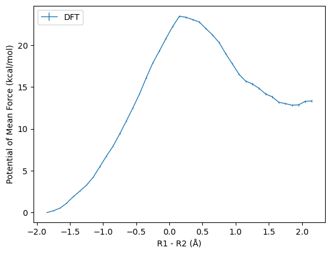

MBAR#
import sys
import numpy as np
from scipy import stats
import matplotlib.pyplot as plt
from matplotlib.ticker import AutoMinorLocator, LogLocator, NullFormatter
from glob import glob
from sklearn.utils import resample
import pymbar
from pymbar.mbar_pmf import mbar_pmf
pwd
'/Users/van/github/CodingNotes/notebooks/02-simulation/analysis'
# from glob import glob
n_windows = 42
val_min = -1.90
val_max = 2.20
fc = 300.0
nbins = n_windows - 1
val_kn = []
for i in range(n_windows):
fnames = sorted(glob('../test/mbar/%02d/step6.0?_equilibration.cv' % i))
arrays = [np.loadtxt(f, usecols=1)[::] for f in fnames[:]]
val_kn.append(np.concatenate(arrays))
val0_k = np.linspace(val_min, val_max, n_windows)
K_k = np.ones(n_windows) * fc
for i in range(n_windows):
print("Window %02d:" % i, pymbar.timeseries.subsampleCorrelatedData(val_kn[i], conservative=True))
Window 00: range(0, 4320, 2)
Window 01: range(0, 4320, 2)
Window 02: range(0, 4320, 2)
Window 03: range(0, 4320, 2)
Window 04: range(0, 4320, 2)
Window 05: range(0, 4320, 2)
Window 06: range(0, 4320, 2)
Window 07: range(0, 4320, 2)
Window 08: range(0, 4320, 2)
Window 09: range(0, 4320, 2)
Window 10: range(0, 4320, 2)
Window 11: range(0, 4320)
Window 12: range(0, 4320, 2)
Window 13: range(0, 4320, 2)
Window 14: range(0, 4320, 2)
Window 15: range(0, 4320, 2)
Window 16: range(0, 4320, 2)
Window 17: range(0, 4320, 3)
Window 18: range(0, 4320, 3)
Window 19: range(0, 4320, 3)
Window 20: range(0, 4320, 4)
Window 21: range(0, 4320, 3)
Window 22: range(0, 4320, 3)
Window 23: range(0, 4320, 3)
Window 24: range(0, 4320, 3)
Window 25: range(0, 4320, 3)
Window 26: range(0, 4320, 3)
Window 27: range(0, 4320, 3)
Window 28: range(0, 4320, 2)
Window 29: range(0, 4320, 2)
Window 30: range(0, 4320, 2)
Window 31: range(0, 4320, 2)
Window 32: range(0, 4320, 2)
Window 33: range(0, 4320, 2)
Window 34: range(0, 4320, 2)
Window 35: range(0, 4320, 3)
Window 36: range(0, 4320, 2)
Window 37: range(0, 4320, 3)
Window 38: range(0, 4320, 3)
Window 39: range(0, 4320, 3)
Window 40: range(0, 4320, 2)
Window 41: range(0, 4320, 2)
# mbar = mbar_pmf(val_kn, val0_k, K_k, 300.0, u_kn=np.array(ene_pm3))
mbar = mbar_pmf(val_kn, val0_k, K_k, fc)
K (total states) = 42, total samples = 181440
N_k =
[4320 4320 4320 4320 4320 4320 4320 4320 4320 4320 4320 4320 4320 4320
4320 4320 4320 4320 4320 4320 4320 4320 4320 4320 4320 4320 4320 4320
4320 4320 4320 4320 4320 4320 4320 4320 4320 4320 4320 4320 4320 4320]
There are 42 states with samples.
Initial dimensionless free energies with method BAR
f_k =
[ 0. 0.17604966 0.62509638 1.33214313 2.45107979 3.7088232
4.84781657 6.14082562 7.87828969 10.06376706 12.07115782 14.21851511
16.67507912 19.29176847 21.93298361 24.80495648 27.96446873 30.81203376
33.30525296 35.74203202 38.1602146 39.2263641 38.90515719 38.40380405
37.45848472 36.12841996 34.67775712 32.66850312 30.51373847 28.48324234
26.83562856 26.01533937 25.30587587 24.26956539 23.42441905 22.5752032
21.87260903 21.66446369 21.47609735 21.91496687 22.35663474 22.35809535]
Determining dimensionless free energies by Newton-Raphson / self-consistent iteration.
self consistent iteration gradient norm is 1024.9, Newton-Raphson gradient norm is 0.00061337
Choosing self-consistent iteration on iteration 0
self consistent iteration gradient norm is 419.97, Newton-Raphson gradient norm is 3.7767e-05
Choosing self-consistent iteration for lower gradient on iteration 1
self consistent iteration gradient norm is 246.83, Newton-Raphson gradient norm is 6.691e-06
Newton-Raphson used on iteration 2
self consistent iteration gradient norm is 1.721e-06, Newton-Raphson gradient norm is 3.6439e-21
Newton-Raphson used on iteration 3
self consistent iteration gradient norm is 2.0022e-21, Newton-Raphson gradient norm is 3.1657e-21
Choosing self-consistent iteration for lower gradient on iteration 4
Converged to tolerance of 5.803667e-15 in 5 iterations.
Of 5 iterations, 2 were Newton-Raphson iterations and 3 were self-consistent iterations
Final dimensionless free energies
f_k =
[ 0. 0.17216713 0.62495782 1.33497605 2.44655714 3.69989005
4.84654469 6.14571065 7.87895497 10.0537257 12.06173493 14.21052961
16.66678381 19.28647823 21.93243397 24.80842252 27.96679161 30.82880681
33.32017016 35.76650415 38.1873388 39.24335104 38.9232676 38.41526592
37.4694104 36.13907674 34.6802343 32.68411881 30.53934709 28.51516788
26.87708031 26.04071521 25.32331082 24.29325877 23.45209159 22.61656427
21.92029701 21.69162966 21.5173112 21.93654298 22.36069086 22.36754027]
MBAR initialization complete.
bin_centers, f_i, df_i, reweighting_entropy = mbar.get_pmf(val_min, val_max, nbins)
bin_centers, f_i, df_i, reweighting_entropy = mbar.get_pmf(val_min, val_max, nbins, uncertainties='from-specified', pmf_reference=f_i[:20].argmin())
np.savetxt("freefile_mbar", np.column_stack((bin_centers, f_i, df_i)))
initial = np.loadtxt("freefile_mbar")
plt.xlabel("R1 - R2 (Å)")
plt.ylabel("Potential of Mean Force (kcal/mol)")
plt.errorbar(initial[:,0], initial[:,1] - initial[:10,1].min(), yerr=initial[:,2], linewidth=1, label="DFT")
plt.legend(loc=2)
plt.savefig("pmf.png", dpi=300)
plt.show()
print(round(initial[:,1].max() - initial[:10,1].min(),1), round(initial[initial[:,1].argmax()][2],1))

23.4 0.1